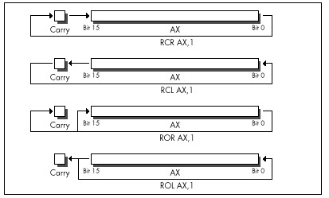

| Previous | Table of Contents | Next |
Next, we come to an item that cycle counters will love, especially since it involves apparently incorrect documentation on Intel’s part. According to Intel’s documents, all RCR and RCL instructions, which perform rotations through the Carry flag, as shown in Figure 9.4, take 9 cycles on the 386 when working with a register operand. My measurements indicate that the 9-cycle execution time almost holds true for multibit rotate-through-carries, which I’ve timed at 8 cycles apiece; for example, RCR AX,CL takes 8 cycles on my 386, as does RCL DX,2. Contrast that with ROR and ROL, which can rotate the contents of a register any number of bits in just 3 cycles.
However, rotating by one bit through the Carry flag does not take 9 cycles, contrary to Intel’s 80386 Programmer’s Reference Manual, or even 8 cycles. In fact, RCR reg,1 and RCL reg,1 take 3 cycles, just like ROR, ROL, SHR, and SHL. At least, that’s how fast they run on my 386, and I very much doubt that you’ll find different execution times on other 386s. (Please let me know if you do, though!)

Figure 9.4 Performing rotate instructions using the Carry flag.
Interestingly, according to Intel’s i486 Microprocessor Programmer’s Reference Manual, the 486 can RCR or RCL a register by one bit in 3 cycles, but takes between 8 and 30 cycles to perform a multibit register RCR or RCL!
No great lesson here, just a caution to be leery of multibit RCR and RCL when performance matters—and to take cycle-time documentation with a grain of salt.
Did you ever wonder how to code a far jump to an absolute address in assembly language? Probably not, but if you ever do, you’re going to be glad for this next item, because the obvious solution doesn’t work. You might think all it would take to jump to, say, 1000:5 would be JMP FAR PTR 1000:5, but you’d be wrong. That won’t even assemble. You might then think to construct in memory a far pointer containing 1000:5, as in the following:
Ptr dd ?
:
mov word ptr [Ptr],5
mov word ptr [Ptr+2],1000h
jmp [Ptr]
That will work, but at a price in performance. On an 8088, JMP DWORD PTR [mem] (an indirect far jump) takes at least 37 cycles; JMP DWORD PTR label (a direct far jump) takes only 15 cycles (plus, almost certainly, some cycles for instruction fetching). On a 386, an indirect far jump is documented to take at least 43 cycles in real mode (31 in protected mode); a direct far jump is documented to take at least 12 cycles, about three times faster. In truth, the difference between those two is nowhere near that big; the fastest I’ve measured for a direct far jump is 21 cycles, and I’ve measured indirect far jumps as fast as 30 cycles, so direct is still faster, but not by so much. (Oh, those cycle-time documentation blues!) Also, a direct far jump is documented to take at least 27 cycles in protected mode; why the big difference in protected mode, I have no idea.
At any rate, to return to our original problem of jumping to 1000:5: Although an indirect far jump will work, a direct far jump is still preferable.
Listing 9.7 shows a short program that performs a direct far call to 1000:5. (Don’t run it, unless you want to crash your system!) It does this by creating a dummy segment at 1000H, so that the label FarLabel can be created with the desired far attribute at the proper location. (Segments created with “AT” don’t cause the generation of any actual bytes or the allocation of any memory; they’re just templates.) It’s a little kludgey, but at least it does work. There may be a better solution; if you have one, pass it along.
LISTING 9.7 L9-7.ASM
; Program to perform a direct far jump to address 1000:5.
; *** Do not run this program! It’s just an example of how ***
; *** to build a direct far jump to an absolute address ***
;
; Tested with TASM 2 and MASM 5.
FarSeg segment at 01000h
org 5
FarLabel label far
FarSeg ends
.model small
.code
start:
jmp FarLabel
end start
By the way, if you’re wondering how I figured this out, I merely applied my good friend Dan Illowsky’s long-standing rule for dealing with MASM:
If the obvious doesn’t work (and it usually doesn’t), just try everything you can think of, no matter how ridiculous, until you find something that does—a rule with plenty of history on its side.
To finish up this chapter, consider these two items. First, in 32-bit protected mode,
sub eax,eax inc eax
takes 4 cycles to execute, but is only 3 bytes long, while
mov eax,1
takes only 2 cycles to execute, but is 5 bytes long (because native mode constants are dwords and the MOV instruction doesn’t sign-extend). Both code fragments are ways to set EAX to 1 (although the first affects the flags and the second doesn’t); this is a classic trade-off of speed for space. Second,
or ebx,-1
takes 2 cycles to execute and is 3 bytes long, while
move bx,-1
takes 2 cycles to execute and is 5 bytes long. Both instructions set EBX to -1; this is a classic trade-off of—gee, it’s not a trade-off at all, is it? OR is a better way to set a 32-bit register to all 1-bits, just as SUB or XOR is a better way to set a register to all 0-bits. Who woulda thunk it? Just goes to show how the 32-bit displacements and constants of 386 native mode change the familiar landscape of 80x86 optimization.
Be warned, though, that I’ve found OR, AND, ADD, and the like to be a cycle slower than MOV when working with immediate operands on the 386 under some circumstances, for reasons that thus far escape me. This just reinforces the first rule of optimization: Measure your code in action, and place not your trust in documented cycle times.
| Previous | Table of Contents | Next |